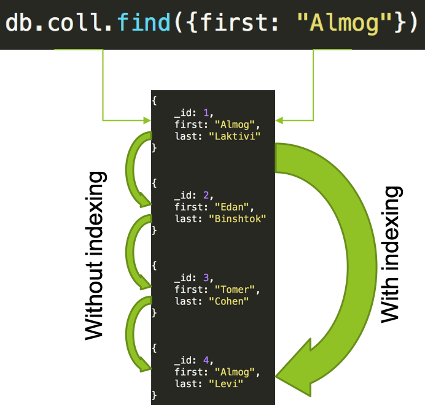

MongoDB Advanced
Module 3 - Indexing
By Almog LaktiviIndexing
The purpose of storing an index is to optimize speed and performance in finding relevant documents for a search query
In MongoDB it means that we will scan less documents
Indexes are special data structures that store a small portion of the collection’s data set in an easy to traverse form
Comes with price
- MongoDB creates a unique index on the _id field during the creation of a collection
- Prevents inserting two documents with the same value
- You cannot drop this index
Default _id index
- Single field – Index on a single field of a document
- Compound – Index on multiple fields
- MultiKey – Index the content stored in array, creates separate index entries for every element of the array
- Geospatial – Index queries of geospatial coordinate data
- Text – Index which supports searching for string content in a collection
- Hashed - To support hash based sharding, MongoDB provides a hashed index type, which indexes the hash of the value of a field
Indexes Types
Without indexes, MongoDB must perform a collection scan, i.e. scan every document in a collection
- Create index (1 ASC, -1 DESC):
db.coll.createIndex({field_name: 1}) - Use
db.coll.getIndexes()function in order to get all indexes .explain()function - Returns information on the query plan (executationStats)db.coll.dropIndex("index_name")function will delete the index- We can create indexes in the background (good for large collections):
db.coll.createIndex({field_name: 1}, {background: true})
Demo Time